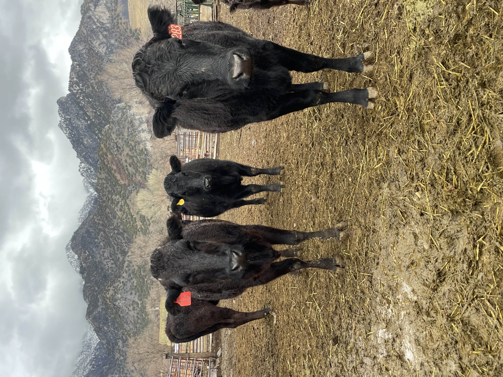
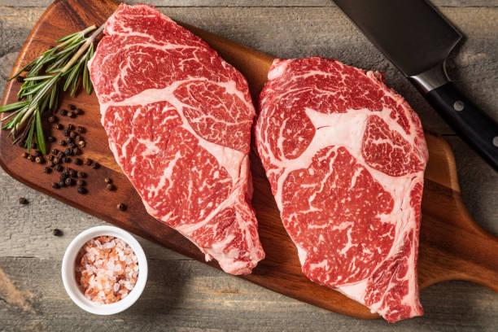

Rocky Mountain Wagyu
Premium Organic Wagyu Beef from Utah
Pasture to plate, The Rocky Mountain Way
Discover prime-grade Wagyu beef raised for 2.5 years in Utah's pristine mountains. We sell whole, half, and quarter beef directly from our family farm — ordering is done by calling or texting us directly.
Primary: 402-217-5291 | Secondary: 801-301-3850 | rockymtnwagyu@gmail.com
Ready to Order?
We're a family farm — not a storefront. The best way to get started is to reach out directly. We'll walk you through everything and answer any questions you have.
Why We Raise Premium Wagyu
At our premier Utah farm, the mission is simple: feed families healthy, organic beef they can trust.

Our Wagyu cattle thriving on Utah's mountain pastures—raised with care for 2.5 years
We started this farm because we believe families deserve access to premium, healthy beef raised with integrity. Our mission is simple: to feed families healthy, organic beef.
Every decision we make is guided by one principle: would we serve this to our own families? The answer is always yes. From our Utah mountain pastures to your table, we maintain the highest standards of animal welfare and quality control. Our cattle are raised without hormones or antibiotics, on natural mountain grazing lands that produce superior marbling and flavor.
This isn't just a business—it's our commitment to you and your family's health through premium beef.
Prime-Grade Wagyu Excellence
Our beef is renowned for exceptional marbling, buttery texture, and rich flavor—representing the finest American Wagyu raised in Utah's pristine mountains.



Superior Prime Marbling
Our Wagyu features intense intramuscular fat that creates exceptional tenderness and that signature buttery texture found in prime-grade beef.
Healthier Fat Profile
Wagyu beef has a higher ratio of monounsaturated fats and omega-3s compared to conventional beef, making it a healthier choice even at prime grade.
Unmatched Flavor
Experience rich, buttery taste with deep umami notes that create a truly memorable dining experience—the hallmark of prime Wagyu.
Utah Mountain Raised
Our cattle thrive in Utah's pristine mountain environment, contributing to the superior meat quality that defines our prime-grade offerings.
Our Quality Promise
Each animal receives individual attention throughout its 2.5-year journey to ensure the exceptional beef you deserve.
2.5 Year Raising Period
Each animal is raised for a full 2.5 years to ensure optimal marbling, flavor development, and tenderness—significantly longer than standard beef production.
Organic & Natural
No hormones, no antibiotics, no shortcuts. Just pure, natural raising practices that honor the land and our animals.
Family Operated Farm
We provide personal attention to every animal, traditional raising practices, and a commitment to quality over quantity that only a family farm can provide.

Individual Care From Day One
Every calf born on our farm receives personal attention from the very beginning. This hands-on approach is what sets our beef apart—we know each animal individually and ensure they're healthy, well-fed, and stress-free throughout their entire 2.5-year journey on our Utah farm.
Order Wagyu Beef Near You
Order directly from our Utah farm. Choose from whole, half, or quarter beef.
Whole Beef
Complete animal, perfect for large families or shared purchases. Maximum value and variety of cuts.
Half Beef
Our most popular option—excellent value with balanced selection of roasts, steaks, and ground beef.
Quarter Beef
Perfect introduction to premium quality without committing to a full or half from our farm.
Frequently Asked Questions
Common questions about buying beef from our Utah farm
Where can I find Wagyu beef near me in Utah?
You can buy premium organic Wagyu beef directly from our Utah farm. We serve the Salt Lake area and deliver throughout the state. We offer whole, half, and quarter beef options. Contact us at 402-217-5291 (primary) or 801-301-3850 (secondary), or email rockymtnwagyu@gmail.com.
What makes your Wagyu different from regular beef?
Our cattle are raised for 2.5 years in Utah's Rocky Mountains without hormones or antibiotics. Our beef features prime-grade marbling, healthier fat content, and exceptional flavor compared to conventional beef. All meat is organic and mountain-raised on our family farm.
How long does it take to raise your Wagyu cattle?
Our cattle are raised for 2.5 years from birth on our Utah farm to ensure optimal marbling and flavor development. This is significantly longer than standard beef production, resulting in superior prime-grade quality.
Do you use hormones or antibiotics?
No. We are 100% organic. We never use hormones or antibiotics on our cattle. Our beef is raised naturally in Utah's mountain pastures.
What products do you offer?
We offer whole, half, and quarter beef. All our products are organic prime-grade quality and raised in Utah. Order today from our family farm!
Contact Us
Ready to experience premium Wagyu beef from our Utah farm? We're here to help you select the perfect option for your family.
Order Today

Primary: 402-217-5291
Secondary: 801-301-3850
Email: rockymtnwagyu@gmail.com
We operate on a farming timeline and we're happy to take the time to discuss your needs, answer questions about our beef, or walk you through our ordering process.
Follow Our Journey
See daily life on our Utah farm, meet our cattle, and learn about premium beef